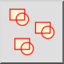

Blok Referansları Seçin
Araç Çubuğu / Simge:


Menü: Blok > Blok Referansları Seçin
Kısayol: B, K
Komutlar: blockselect | selectblock | bk
Araç Çubuğu / Simge:


Bu araç, blok listesinde şu anda seçili olan bloğun tüm blok referanslarını seçer. Yalnızca şu anda düzenlenmekte olan bloğun parçası olan blok referansları seçilir.